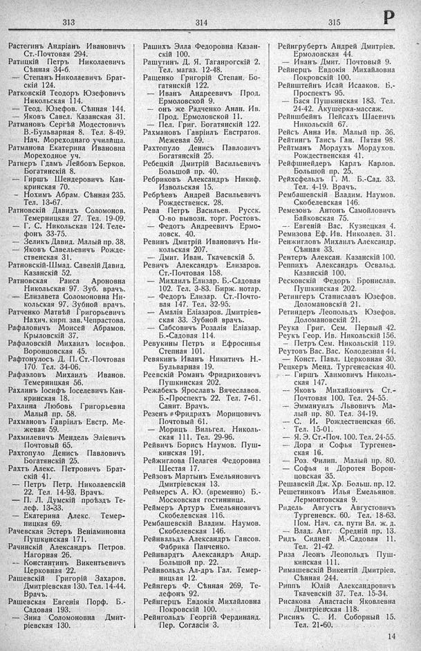

Лист источника 455
Скан

Распознанный текст
313
Растегинъ Андріанъ Ивановичъ
Ст.-Почтовая 294.
Ратицкій Петръ Николаевичъ
Сѣнная 34-б.
— Степанъ Николаевичъ Брат-
скій 124.
Ратковскій Теодоръ Юзефовичъ
Никольская 114.
— Теод. Юзефов. Сѣнная 144.
— Яковъ Савел. Казанская 31.
Ратмановъ Сергѣй Модестовичъ
В.-Бульварная 8. Тел. 8-49.
Нач. Мореходнаго училища.
Ратманова Екатерина Ивановна
Мореходное уч.
Ратнеръ Гдамъ Лейбовъ Берков.
Богатянскій 8.
— Гиршъ Шендеровичъ Кан-
кринская 70.
— Нохимъ Абрам. Сѣнная 235.
Тел. 13-67.
Ратновскій Давидъ Соломонов.
Темерницкая 27. Тел. 19-09.
— Г. С. Никольская 124. Теле-
фонъ 33-75.
— Зеликъ Давид. Малый пр. 38.
— Яковъ Савельевичъ Рожде-
ственская 31.
Ратновскій-Шмад. Савелій Давид.
Казанскій 52.
Ратновская Раиса Ароновна
Никольская 97. Зуб. врачъ.
— Елизавета Соломоновна Ни-
кольская 97. Зубной врачъ.
Ратченко Матвѣй Григорьевичъ
Нахич. кирп. зав. Чепрастова.
Рафаловичъ Моисей Абрамов.
Крыловскій 37.
Рафаловскій Михаилъ Іосифов.
Воронцовская 45.
Рафтонулосъ Д. П. Ст.-Почтовая
170. Тел. 34-06.
Рафаэловъ Михаилъ Иванов.
Темерницкая 56.
Рахлинъ Іосифъ Іоселевичъ Кан-
кринская 18.
Рахлина Любовь Григорьевна
Малый пр. 58.
Рахмановъ Гавріилъ Евстр. Ме-
жевая 59.
Рахмилевичъ Мендель Эліевичъ
Почтовый 65.
Рахтопуло Денисъ Павловичъ
Богатянскій 25.
Рахтъ Алекс. Петровичъ Брат-
скій 41.
— Петръ Петр. Николаевскій
22. Тел. 14-93. Врачъ.
— П. Л. Думскій проѣздъ Те-
леф. 13-33.
— Екатерина Алекс. Темер-
ницкая 69.
Рачевская Эстеръ Веніаминовна
Пушкинская 171.
Рачинскій Александръ Петров.
Нагорная 26.
-- Константинъ Викентьевичъ
Церковная 22.
Рашевскій Григорій Захаров.
Дмитріевская 130. Тел. 14-44.
Врачъ.
Рашевская Евгенія Порф. Б.-
Садовая 193.
— Зина Соломоновна Дмит-
ріевская 130.
314
Рашихъ Элла Федоровна Казан-
скій 100.
Рашутинъ Д. Я. Таганрогскій 2.
Тел. магаз. 12-48.
Ращенко Григорій Степан. Бо-
гатянскій 122.
— Иванъ Андреевичъ Прод.
Ермоловской 9.
— онъ же Радченко Анан. Ив.
Прод. Ермоловской 11.
— Пел. Григ. Богатянскій 122.
Рахмановъ Гавріилъ Евстратов.
Межевая 59.
Рахтопуло Денисъ Павловичъ
Богатянскій 25.
Ребецкій Дмитрій Васильевичъ
Большой пр. 40.
Ребриковъ Александръ Никиф.
Извольская 15.
Ребрѣевъ Андрей Васильевичъ
Рождественск. 28.
Рева Петръ Васильев. Русск.
О-во вывозн. торг. Ростовъ.
— Федотъ Андреевичъ Ермо-
ловск. 40.
Ревинъ Дмитрій Ивановичъ Ни-
кольская 207.
— Дмит. Иван. Ткачевскій 5.
Ревичъ Александръ Елизаров.
Ст.-Почтовая 158.
— Михаилъ Елизар. Б.-Садовая
102. Тел. 3-83. Бирж. нотар.
-- Федоръ Елизар. Ст.-Почто-
вая 147. Тел. 32-95.
— Амалія Еліазаров. Дмитріев-
ская 33. Зубной врачъ.
— Сабсовичъ Розалія Еліазар.
Б.-Садовая 114.
Ревукины Петръ и Ефросинья
Степная 101.
Ревякинъ Иванъ Никитичъ Н.-
Бульварная 19.
Реевскій Романъ Фридриховичъ
Пушкинская 202.
Режабекъ Ярославъ Вячеславов.
Б.-Проспектъ 22. Тел. 7-61.
Санит. Врачъ.
Резенъ Фридрихъ Морицовичъ
Почтовый 61.
— Морицъ Вильгел. Николь-
ская 111. Тел. 29-96.
Рейвичъ Борисъ Наумов. Пуш-
кинская 191.
Рейжиглова Пелагея Федоровна
Шестая 17.
Рейзовъ Мартынъ Емельяновичъ
Дмитріевская 13.
Реймерсъ А. Ю. (временно) Б.-
Московская гостинница.
Реймеръ Артуръ Емельяновичъ
Скобелевская 116.
Рембашевскій Владим. Наумов.
Скобелевская 146.
Рейнвальдъ Александръ Гансов.
Фабрика Панченко.
Рейнвардть Александръ Андр.
Большой пр. 22.
Рейнвольдъ Ал-дръ Гал. Темер-
ницкая 12.
Рейнгертъ Ф. Сѣнная 269. Те-
лефонъ 92.
Рейнгерцъ Евдокія Михайловна
Покровскій 100.
Рейнгольдъ Георгій Фердинанд.
Пер. Согласія 3.
315
Р
Рейнгрубертъ Андрей Дмитріев.
Ермоловская 44.
— Иванъ Дмит. Почтовый 9.
Рейнерцъ Евдокія Михайловна
Покровскій 100.
Рейнштейнъ Исай Исааков. Б.-
Проспектъ 95.
— Бася Пушкинская 183. Тел.
24-42. Акушерка-массаж.
Рейншбейнъ Пейсахъ Шаевичъ
Никольскій 67.
Рейсъ Анна Ив. Малый пр. 36.
Рейтингъ Таисъ Ган. Пятая 98.
Рейтманъ Мордухъ Мордухов.
Рождественская 41.
Рейфшнейдеръ Карлъ Карлов.
Большой пр. 25.
Рейхсфельдъ Г. М. Б.-Сад. 33.
Тел. 4-19. Врачъ.
Рембашевскій Владим. Наумов.
Скобелевская 146.
Ремезовъ Антонъ Самойловичъ
Байковская 75.
— Евгеній Вас. Кузнецкая 4.
Ремизова Еф. Ив. Николаев. 31.
Ренжигловъ Михаилъ Александр.
Сѣнная 33.
Рентеръ Алексан. Казанскій 100.
Реппихъ Александръ Освальд.
Казанскій 100.
Ресковскій Федоръ Бронислав.
Пушкинская 202.
Ретингеръ Станиславъ Юзефов.
Доломановскій 21.
Ретиндеръ Леопольдъ Юзефов.
Доломановскій 21.
Реука Григ. Сем. Первый 42.
Реукъ Геор. Ив. Никольскій 156.
— Петръ Сем. Никольскій 119.
Реутовъ Вас. Вас. Колодезная 44.
— Конст. Павл. Церковная 30.
Рецкеръ Менд. Тургеневская 40.
— Гиршъ Хаимовичъ Николь-
ская 147.
— Яковъ Михайловичъ Ст.-
Почтовая 100. Тел. 24-55.
— Эммануилъ Львовичъ Ма-
лый пр. 80. Тел. 34-19.
— С. И. Рождественская 66.
Тел. 15-01.
— Я. Э. Ст.-Поч. 100. Тел. 24-55.
— Дора и Софья Тургенев-
ская 16.
— Роз. Филип. Малый пр. 80.
— Софья и Доротея Ворон-
цовская 35.
Решавскій Дж. Хр. Больш. пр. 12.
Решетниковъ Илья Емельянов.
Лермонтовская 9.
Ридель Августъ Августовичъ
Тургеневск. 60. Тел. 18-63.
Пом. Нач. сл. пути Вл. ж. д.
— Влад. Авг. Средній пр. 13.
Ридъ Сидней М.-Садовая 11.
Тел. 21-42.
Риза Леонъ Леопольдъ Пуш-
кинская 111.
Римашевскій Викентій Дмитріев.
Сѣнная 244.
Риппъ Юлій Александровичъ
Ткачевскій 37. Тел. 15-34.
Рисакова Анастасія Яковлевна
Дмитріевская 118.
Рисинъ С. И. Соборный 15.
Тел. 21-60.
14